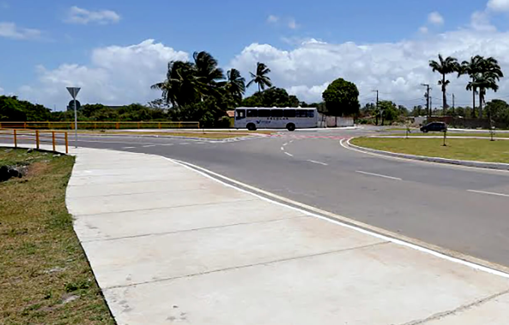

Com um projeto que vai fazer a mobilidade urbana de Aracaju avançar ainda mais, as obras da Perimetral Oeste vão entregar à população uma via com mais de 7.5 km de extensão, ligando o Lamarão ao Bugio.
Clique aqui e saiba mais
